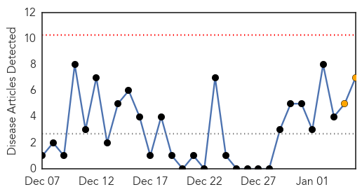
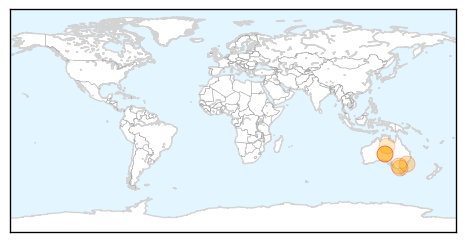
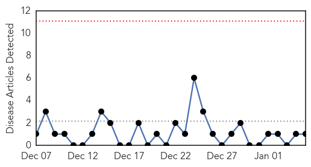
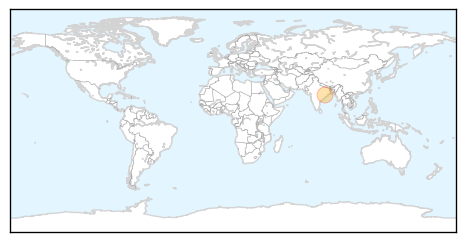

Measles
30-Day Web Trend
0 alerts, 2 warnings

30-Day Twitter Trend
0 alerts, 0 warnings

Article Locations
Article Confidences

Top Articles:
- 0.962
- Thousands exposed to measles virus
- 0.959
- Measles alert follows RMIT graduation ceremony
- 0.959
- Measles alert follows RMIT graduation ceremony
- 0.959
- Measles alert follows RMIT graduation ceremony
- 0.876
- Measles warning issued after infected patients attended graduation
- 0.696
- Three people develop measles after attending Melbourne RMIT graduation ceremony
- 0.602
- Measles linked to RMIT University graduation prompts health warning
Top Tweets:
-
No tweets found for Jan 05, 2015
Hepatitis
30-Day Web Trend
0 alerts, 0 warnings

30-Day Twitter Trend
0 alerts, 0 warnings

Article Locations
Article Confidences

Top Articles:
Top Tweets:
-
No tweets found for Jan 05, 2015